Ranger
Łuk. Atakuje z daleka i trzyma szeroki widok na pole walki. Broń: Bow. Rola: DPS dystansowy.
Brak osobnego opracowania autora. Liczby i specjalizacje ze źródeł pod kartą; zalecany poziom tylko tam, gdzie źródło go podaje.
Skille aktywne
Snipe
rdzeń
Atak podstawowy na jeden cel, przywraca 120 MP. otwiera łańcuch Rapid Fire (50 / 313, przywraca 120 MP) i Spiral Arrow (54 / 361, przywraca 150 MP). Mobile.
Obrażenia tooltipa (1 / 10 / 20): 47 / 278 Poziom 1: 47 / 278
PvE (aion2.gg): +50% Multi-Hit, potem −1 s CD Deadshot za trafienie (12). Od 16 czwarty krok Tempest Arrow zastępuje skrócenie CD do poziomu 20.
Specjalizacje
- poziom 8+20% MP przywrócone
- poziom 8Pochłania 0,7% HP
- poziom 8+50% Multi-Hit
- poziom 12-1 s Deadshot cooldown na każdy hit
- poziom 16Tempest Arrow chain (83 / 696 obrażeń, przywraca 180 MP)
karta skilla na aion2.gg · Aion 2 Companion (aion2.grimvane.app), wartości Global przy podanym poziomie skilla.
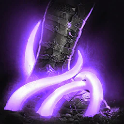
Snare Shot
w rotacji
Earth obrażeń do 4 wrogów w 4 m of cel i Slow (-40% Move Speed) na 5 s. 10 stagger.
Obrażenia tooltipa (1 / 10 / 20): 60 / 698 Poziom 1: 60 / 698
PvE (aion2.gg): w ruchu, potem łańcuch Shackling Arrow (12), potem +20% Skill Speed.
Specjalizacje
- poziom 8+20% Move Speed reduction
- poziom 8+20% Skill Speed
- poziom 8Mobile
- poziom 12Shackling Arrow chain (79 / 908 obrażeń do 4 wrogów, 150 MP, 75% szansy na 3 s Root, 100% na NPCs)
- poziom 16+2 s Slow i Root
karta skilla na aion2.gg · Aion 2 Companion (aion2.grimvane.app), wartości Global przy podanym poziomie skilla.
Tempest Shot
rdzeń
Wind obrażeń do 4 wrogów w 4 m of cel. 1 stagger. Mobile.
Obrażenia tooltipa (1 / 10 / 20): 56 / 388 Poziom 1: 56 / 388
PvE (aion2.gg): do +12% przy mniejszej liczbie celów, potem +10% Critical Hit skilla. Od 16 +20% Skill Speed zastępuje krytyk do poziomu 20.
Specjalizacje
- poziom 8-20% MP
- poziom 8+10% Critical Hit tego skilla
- poziom 8Do +12% na mniej celów
- poziom 125% Knock Back przy krytyku
- poziom 16+20% Skill Speed
karta skilla na aion2.gg · Aion 2 Companion (aion2.grimvane.app), wartości Global przy podanym poziomie skilla.
Marking Shot
w rotacji
Jeden cel. Moves ciebie w input direction i daje Precision (+300 Critical Hit) na 10 s. 7 stagger.
Obrażenia tooltipa (1 / 10 / 20): 142 / 1 049 Poziom 1: 142 / 1 049
PvE (aion2.gg): +5 s Precision, potem drugie użycie (12), potem ignoruje Block i Evasion i zawsze krytyk (16).
Specjalizacje
- poziom 8+5% Perfect Chance podczas Precision runs
- poziom 830% Knock Back
- poziom 8+5 s Precision
- poziom 12+1 użycie z rzędu
- poziom 16Ignoruje Block i Evasion i zawsze krytyk
karta skilla na aion2.gg · Aion 2 Companion (aion2.grimvane.app), wartości Global przy podanym poziomie skilla.
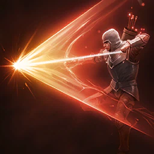
Drill Dart
rdzeń
Fire obrażeń do 4 wrogów w 4 m i Bleed for 43 / 322 na second na 6 s, z -60% Incoming Heal. przywraca 100 MP przy krytyku. 5 stagger. Mobile.
Obrażenia tooltipa (1 / 10 / 20): 112 / 829 Poziom 1: 112 / 829
PvE (aion2.gg): +20% Skill Speed, potem Multi-Hit (12). Od 16 dodatkowa aktywacja zastępuje Skill Speed, aż poziom 20 otworzy trzeci slot.
Specjalizacje
- poziom 8Pochłania 3% HP
- poziom 8+2 s Bleed
- poziom 8+20% Skill Speed
- poziom 12Multi-Hit przy trafieniu
- poziom 16Fires 1 extra time
karta skilla na aion2.gg · Aion 2 Companion (aion2.grimvane.app), wartości Global przy podanym poziomie skilla.
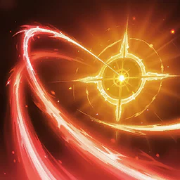
Arrow Scattershot
brak danych
Jeden cel, który musi być w stanie Stagger.
Obrażenia tooltipa (1 / 10 / 20): 96 / 566 Poziom 1: 96 / 566
PvE (aion2.gg): +120 MP przy trafieniu, potem Multi-Hit, potem −1 s do wszystkich CD za trafienie.
Specjalizacje
- poziom 8Pochłania 5% HP
- poziom 8+120 MP przy trafieniu
- poziom 8Mobile
- poziom 12Multi-Hit przy trafieniu
- poziom 16-1 s do all cooldowns przy trafieniu
karta skilla na aion2.gg · Aion 2 Companion (aion2.grimvane.app), wartości Global przy podanym poziomie skilla.
Gale Arrow
rdzeń
Wind obrażeń do 4 wrogów w 4 m i Gale na ciebie na 10 s, który dodaje +7% Combat Speed, +7% PvE i +3,5% PvP Damage Boost. 10 stagger.
Obrażenia tooltipa (1 / 10 / 20): 365 / 1 804 Poziom 1: 365 / 1 804
PvE (aion2.gg): +5 s Gale, potem mocniejszy buff przy mniejszej liczbie celów (12). Od 16 −10 s CD zastępuje czas trwania do poziomu 20.
Specjalizacje
- poziom 8+5 s Gale
- poziom 850% Knock Back
- poziom 8Mobile
- poziom 12Stronger Gale na mniej celów (no listed number)
- poziom 16−10 s CD
karta skilla na aion2.gg · Aion 2 Companion (aion2.grimvane.app), wartości Global przy podanym poziomie skilla.
Explosion Trap
1 wystarcza na start
Trap przy twoje feet na 10 s. gdy stepped on, Earth obrażeń do 4 wrogów w 5 m i 40% szansy na 3 s Stun (100% na NPCs). 10 stagger.
Obrażenia tooltipa (1 / 10 / 20): 344 / 1 702 Poziom 1: 344 / 1 702
aion2.gg: przy randze 1 bez specjalizacji. Pułapka staje pod tobą, a Ranger stoi z daleka.
Specjalizacje
- poziom 8Przyciąga wrogów na explosion
- poziom 8+1 s Stun
- poziom 8Dodatkowe obrażenia 3 s po hit
- poziom 12+20% Stun
- poziom 16+1 użycie z rzędu
karta skilla na aion2.gg · Aion 2 Companion (aion2.grimvane.app), wartości Global przy podanym poziomie skilla.
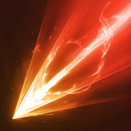
Burst Arrow
w rotacji
Wind obrażeń do 4 wrogów w 4 m of cel that musi być spowolniony albo w Root. 15 stagger.
Obrażenia tooltipa (1 / 10 / 20): 544 / 2 125 Poziom 1: 544 / 2 125
PvE (aion2.gg): +50% Multi-Hit, potem do +20% przy mniejszej liczbie celów (12), potem 25% szansy na reset CD (16).
Specjalizacje
- poziom 8Pochłania 10% HP
- poziom 8+50% Multi-Hit
- poziom 8Mobile
- poziom 12Do +20% na mniej celów
- poziom 1625% szansy na reset jego cooldown
karta skilla na aion2.gg · Aion 2 Companion (aion2.grimvane.app), wartości Global przy podanym poziomie skilla.
Suppressing Arrow
brak danych
Jeden cel, z 40% szansy na 3 s Stun podczas Precision is active (100% na NPCs). 10 stagger.
Obrażenia tooltipa (1 / 10 / 20): 362 / 1 414 Poziom 1: 362 / 1 414
PvE (aion2.gg): +50% Multi-Hit, potem +20% Skill Speed.
Specjalizacje
- poziom 8+50% Multi-Hit
- poziom 8+1 s Stun
- poziom 8+20% Skill Speed
- poziom 12+20% Stun
- poziom 1625% szansy na reset jego cooldown
karta skilla na aion2.gg · Aion 2 Companion (aion2.grimvane.app), wartości Global przy podanym poziomie skilla.
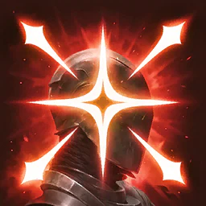
Deadshot
rdzeń
Charge skill z 3 stages na jeden cel. zadaje 35% więcej z Precision. 10 do 16 stagger.
Obrażenia tooltipa (1 / 10 / 20): 599 to 1 798 / 1 852 to 5 557 Poziom 1: 599 do 1 798 / 1 852 do 5 557
PvE grupowe (aion2.gg): +30% Skill Speed, potem ignoruje Block i Evasion jako Multi-Hit (12), potem dodatkowe obrażenia (16). Companion: jeden z rdzenia; inny plan podnosi go do 16.
Specjalizacje
- poziom 8No MP cost
- poziom 8+30% Skill Speed
- poziom 8Mobile, charging included
- poziom 12Ignoruje Block i Evasion i lands as Multi-Hit
- poziom 16Dodatkowe obrażenia przy trafieniu (no listed number)
karta skilla na aion2.gg · Aion 2 Companion (aion2.grimvane.app), wartości Global przy podanym poziomie skilla.

Defiance
10 albo 1
Usuwa Stun, Knockdown, Airborne, Grab, Frost i Fear i daje Tenacity (status effect immunity) na 5 s. Cooldown reduction nie działa.
Poziom 1: Brak
aion2.gg: ranga 10 pod 20% HP i krótszy CD. Jeśli rzadko potrzebny, zostaw 1 i dokończ Vigilant Eye.
Specjalizacje
- poziom 8Lightning Arrow chain (518 / 1 315 obrażeń, 3 s Stun, 120 s cooldown)
- poziom 8Przywraca 1 000 Stamina
- poziom 8Przywraca 20% HP
- poziom 12+2 s Tenacity
- poziom 16+50% PvE i +25% PvP Damage Tolerance podczas Tenacity runs
karta skilla na aion2.gg · Aion 2 Companion (aion2.grimvane.app), wartości Global przy podanym poziomie skilla.
Pasywki
Vigilant Eye
brak danych
Evasion +200, Max HP +6%, leczy 85 do 102 na evade (wewnętrzny CD 3 s)
Poziom 1: Max HP +15%, leczy 562 do 674 Na wyższym poziomie: Max HP +25%, leczy 1 112 do 1 334
Pasywka nie ma specjalizacji.
karta skilla na aion2.gg · Aion 2 Companion (aion2.grimvane.app), wartości Global przy podanym poziomie skilla.
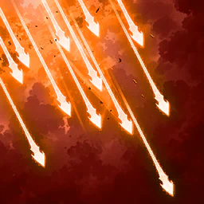
Concentrated Fire
brak danych
50% szansy na 56 Wind obrażeń cel taking obrażeń over time (wewnętrzny CD 1 s)
Poziom 1: 276 Na wyższym poziomie: 428
Pasywka nie ma specjalizacji.
karta skilla na aion2.gg · Aion 2 Companion (aion2.grimvane.app), wartości Global przy podanym poziomie skilla.
Wind Vigor
brak danych
Max Stamina +15; +10% Move Speed na 1 s gdy attacked (5 s cooldown)
Poziom 1: Stamina +150; +19% na 1,8 s Na wyższym poziomie: Stamina +300; +29% na 2,8 s
Pasywka nie ma specjalizacji.
karta skilla na aion2.gg · Aion 2 Companion (aion2.grimvane.app), wartości Global przy podanym poziomie skilla.
Focused Eye
brak danych
Accuracy +100, PvE Damage Boost +1%, PvP +0,5%, Double Chance +0,2%
Poziom 1: PvE +10%, PvP +5%, Double +2% Na wyższym poziomie: PvE +20%, PvP +10%, Double +4%
Pasywka nie ma specjalizacji.
karta skilla na aion2.gg · Aion 2 Companion (aion2.grimvane.app), wartości Global przy podanym poziomie skilla.
Hunter's Resolve
brak danych
Critical Damage Boost +6%
Poziom 1: +15% Na wyższym poziomie: +25%
Pasywka nie ma specjalizacji.
karta skilla na aion2.gg · Aion 2 Companion (aion2.grimvane.app), wartości Global przy podanym poziomie skilla.
Unyielding Resolve
brak danych
Ailment-type i Impact-type Resist +11,2%
Poziom 1: +22% Na wyższym poziomie: +34%
Pasywka nie ma specjalizacji.
karta skilla na aion2.gg · Aion 2 Companion (aion2.grimvane.app), wartości Global przy podanym poziomie skilla.
Rooting Eye
brak danych
50% szansy na 143 Wind obrażeń na spowolniony albo w Root cel (wewnętrzny CD 1 s)
Poziom 1: 364 Na wyższym poziomie: 524
Pasywka nie ma specjalizacji.
karta skilla na aion2.gg · Aion 2 Companion (aion2.grimvane.app), wartości Global przy podanym poziomie skilla.
Melee Fire
brak danych
25% szansy na 148 extra Wind obrażeń na any hit; 5% Knock Back na cel w 5 m (wewnętrzny CD 1 s)
Poziom 1: 304 Na wyższym poziomie: 417
Pasywka nie ma specjalizacji.
karta skilla na aion2.gg · Aion 2 Companion (aion2.grimvane.app), wartości Global przy podanym poziomie skilla.
Revitalization Contract
brak danych
Status Effect Resist +17%, +10% więcej na 5 s gdy hit podczas stunned, knocked down, airborne, frozen albo feared (do 10 stacki); leczy 35% Max HP przy 10% HP albo less (CD 60 s)
Poziom 1: Resist +35%, leczy 44% Na wyższym poziomie: Resist +55%, leczy 54%
Pasywka nie ma specjalizacji.
karta skilla na aion2.gg · Aion 2 Companion (aion2.grimvane.app), wartości Global przy podanym poziomie skilla.
Hunter's Soul
brak danych
50% szansy na 344 Wind obrażeń przy krytyku (wewnętrzny CD 1 s)
Poziom 1: 650 Na wyższym poziomie: 872
Pasywka nie ma specjalizacji.
karta skilla na aion2.gg · Aion 2 Companion (aion2.grimvane.app), wartości Global przy podanym poziomie skilla.
Stygmy
Griffon Arrow
brak danych
964 Fire obrażeń do 4 wrogów w 4 m (1 971 przy 10) i Crimson Flames na 10 s przy 482 na second (985 przy 10, 1 351 przy 20), więcej podczas cele move. 20 stagger
Perki stygmy
- poziom 5Mobile
- poziom 10+5 s burn
- poziom 15Dodatkowe obrażenia gdy burning cel is hit
- poziom 20Ticks twice as often
karta skilla na aion2.gg · Aion 2 Companion (aion2.grimvane.app), wartości Global przy podanym poziomie skilla.
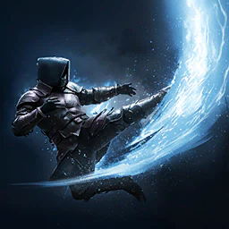
Ambush Kick
brak danych
Przechodzi za cel w 5 m, zadaje 857 Wind obrażeń (1 752 przy 10) z Knock Back, potem moves ciebie back
Perki stygmy
- poziom 5+5 m range
- poziom 1010% Max HP tarcza na 5 s
- poziom 1550% szansy na 3 s Stun
- poziom 20+50% Stun
karta skilla na aion2.gg · Aion 2 Companion (aion2.grimvane.app), wartości Global przy podanym poziomie skilla.
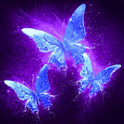
Illusory Arrow
brak danych
1 099 Wind obrażeń (2 247 przy 10) i Blind na 3 s. 15 stagger
Perki stygmy
- poziom 5+1 s Blind
- poziom 10AoE
- poziom 15Slow na 5 s
- poziom 20+1 użycie z rzędu
karta skilla na aion2.gg · Aion 2 Companion (aion2.grimvane.app), wartości Global przy podanym poziomie skilla.
Sealing Arrow
brak danych
1 043 Wind obrażeń (2 132 przy 10) i 75% szansy na 5 s Seal (100% na NPCs). 20 stagger
Perki stygmy
- poziom 550% szansy na 5 s Root
- poziom 10-1 000 wróg Max Stamina na 5 s
- poziom 15+2 s Seal
- poziom 20+25% Seal
karta skilla na aion2.gg · Aion 2 Companion (aion2.grimvane.app), wartości Global przy podanym poziomie skilla.
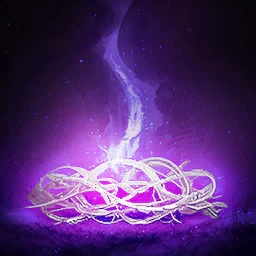
Ensnaring Trap
brak danych
Trap przy twoje feet na 30 s. gdy stepped on, 1 218 Earth obrażeń do 4 wrogów w 5 m (2 489 przy 10) i Airborne na 3 s. 20 stagger
Perki stygmy
- poziom 5Guerilla Strike cios następny (1 269, moves ciebie back)
- poziom 10Usuwa do 2 buffs
- poziom 15+1 s Airborne
- poziom 20−30 s CD
karta skilla na aion2.gg · Aion 2 Companion (aion2.grimvane.app), wartości Global przy podanym poziomie skilla.
Stealth
brak danych
Stealth na 10 s, tylko poza walką; entering combat usuwa it
Perki stygmy
- poziom 5Crits od Stealth
- poziom 10+20% Move Speed
- poziom 15Dział w walce
- poziom 20+10 s
karta skilla na aion2.gg · Aion 2 Companion (aion2.grimvane.app), wartości Global przy podanym poziomie skilla.
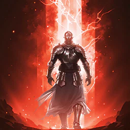
Bow of Blessing
brak danych
+200 Critical Hit i +100 Accuracy na 10 s (14,5 s przy 10, 20 s przy 20)
Perki stygmy
- poziom 5+50% Multi-Hit Chance
- poziom 10Attack od Critical Hit
- poziom 15+20% Critical Damage Boost
- poziom 20+7% Double Chance, all przez czas działania
karta skilla na aion2.gg · Aion 2 Companion (aion2.grimvane.app), wartości Global przy podanym poziomie skilla.
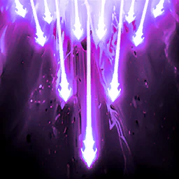
Arrow Storm
brak danych
1 184 Wind obrażeń do 4 wrogów w 4 m (2 420 przy 10) i 50% szansy na 3 s Stun (100% na NPCs). 50 stagger
Perki stygmy
- poziom 5Do +20% na więcej celów
- poziom 10Slow na 10 s
- poziom 15+1 s Stun
- poziom 20+25% Stun
karta skilla na aion2.gg · Aion 2 Companion (aion2.grimvane.app), wartości Global przy podanym poziomie skilla.
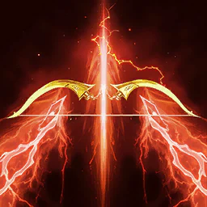
Vaizel's Authority
brak danych
+20% Attack na 10 s (14,5 s przy 10, 20 s przy 20)
Perki stygmy
- poziom 5+10% Perfect Chance
- poziom 10Focused Eye x1,5
- poziom 15Hunter's Soul x1,5
- poziom 2050% chance na każdy crit do take 1 s off każdy cooldown, all przez czas działania
karta skilla na aion2.gg · Aion 2 Companion (aion2.grimvane.app), wartości Global przy podanym poziomie skilla.
Mother Nature's Breath
brak danych
+20% PvE i +10% PvP Damage Tolerance i +200 Critical Hit Resist na 6 s, plus Mother Nature's Embrace ( 50% szansy na pochłania 25% of obrażeń taken as HP). Cooldown zwiększa do nie apply
Perki stygmy
- poziom 5Usuwa i blokuje obrażeń over time
- poziom 10Vigilant Eye x1,5
- poziom 15Unyielding Resolve x1,5
- poziom 20+20% PvE i +10% PvP tolerance
karta skilla na aion2.gg · Aion 2 Companion (aion2.grimvane.app), wartości Global przy podanym poziomie skilla.
Explosive Arrow
brak danych
1 426 Fire obrażeń do 4 wrogów w 4 m (2 916 przy 10), +20% przeciw spowolniony albo w Root cel. 20 stagger
Perki stygmy
- poziom 5−15 s CD
- poziom 10+10% przeciw Slow albo Root
- poziom 15Zawsze krytyk
- poziom 20+20% przeciw Slow albo Root
karta skilla na aion2.gg · Aion 2 Companion (aion2.grimvane.app), wartości Global przy podanym poziomie skilla.
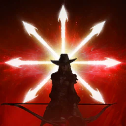
Supporting Fire
brak danych
Orb near ciebie na 15 s. każdy 0,5 s it has 25% szansy na fire shot of 243 Wind obrażeń (497 przy 10, 682 przy 20) that pochłania 1,5% HP
Perki stygmy
- poziom 5+25% chance
- poziom 10+15 s
- poziom 15−30 s CD
- poziom 20Każdy shot crits
karta skilla na aion2.gg · Aion 2 Companion (aion2.grimvane.app), wartości Global przy podanym poziomie skilla.

Assault Smite
brak danych
902 Wind obrażeń do 4 wrogów w 4 m (1 844 przy 10) i 30% szansy na 3 s Stun (100% na NPCs); Defense rises o do 20% z cele hit
Perki stygmy
- poziom 5+20% Attack na 5 s przy trafieniu
- poziom 10500 MP obrażeń
- poziom 15+10 m range
- poziom 20+20% Stun
karta skilla na aion2.gg · Aion 2 Companion (aion2.grimvane.app), wartości Global przy podanym poziomie skilla.
Build PvE
Dwa źródła, które nie wybierają tego samego czwartego slotu. Nie zlewam ich w jeden zestaw.
- aion2.gg, grupa: Vaizel's Authority, Bow of Blessing, Explosive Arrow i Griffon Arrow. Solo: Arrow Storm zamiast Griffon Arrow.
- Aion 2 Companion, levelowanie i grupa: Vaizel's Authority, Bow of Blessing, Supporting Fire oraz Griffon Arrow albo Explosive Arrow. Po równym wbiciu czterech do 5 i 10, Vaizel's idzie na 20 jako pierwszy. Inny build Companion: Vaizel's, Bow, Explosive i elastyczny Arrow Storm, Griffon albo Mother Nature's Breath. Arrow Storm, gdy grupa nie wyrabia staggera.
- Rdzeń skilli (Companion): Deadshot, Snipe, Drill Dart, Gale Arrow i Tempest Shot. Inny plan nazywa rdzeniem Deadshot, Drill Dart i Tempest Shot, każdy do 16.
- Pasywki (Companion): Focused Eye, Hunter's Resolve, Hunter's Soul, potem Concentrated Fire, potem obronne.
- Deadshot trzymaj na własnym klawiszu. Marking Shot odśwież około 2–3 s przed końcem Precision. Makra tylko wbudowane w grę; makra sprzętowe i programy trzecie Companion opisuje jako ryzyko bana na grach NC.
Źródła
- Aion 2 Companion — skille, pasywki, stygmy
- aion2.gg — lista skilli klasy
- aion2.gg — build PvE
- aion2data.com — dane klienta Global
Data tej strony: 11 listopada 2026. Edycja Global (Steam, EU). Nazwy skilli są po angielsku, tak jak w kliencie.